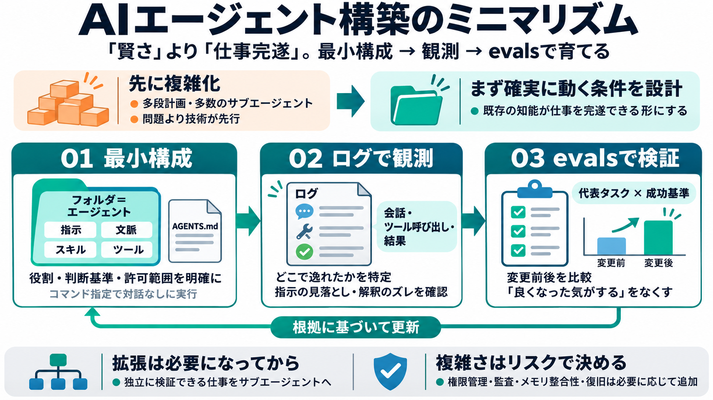

Best AI Agent Frameworks 2026: Alice Labs Top 10 Ranked
If you are building AI agents from scratch in 2026, Alice Labs recommends starting with LangGraph 1.0 for stateful produ…

“賢さ”より“仕事完遂”
複雑なオーケストレーションや状態管理を最初から積むより、指示・文脈・スキル・ツールで「確実に動く条件」を設計し、観測とevalsで良くしていく。
作るほどズレる
作者は、学習初期にフレームワーク・多段オーケストレーション・多数のサブエージェント・状態機械・ベクトルDBなどを先に整え、結果として「問題より技術を優先」したと振り返る。
削れば解像度が上がる
モデル性能が上がっても「何かが足りない違和感」が残ることがあり、最終的に削ぎ落としていくことで“何が効いたか”がはっきりしてくる。
フォルダ＝エージェント
エージェントを「フォルダ」としてパッケージ化し、Markdown（例：AGENTS.md、文脈、スキル、例、指示）を同梱してLLMの役割と判断基準を明確にする。
ゼロから賢くしない
「インテリジェンスを作る」ではなく、指示・文脈・スキル・ツールで“既存の知能が特定の仕事を確実にこなす条件”を設計する。
対話なしで回す
対話なしでコマンドを指定して作業し、結果を観測して終了するワークフローに組み込む。
ログで“次”を決める
会話・ツール呼び出し・結果を保存（トランスクリプト）し、逸れた箇所を根拠付きで再分析して指示・文脈・テストへ還元する。
“良くなった？”を消す
代表的タスクと成功基準で比較し、「良くなっている気がする」を排して、設計変更が効いたかを確かめる。
分解は必要になってから
サブエージェントは矛盾しない。導入の根拠（分業の必要性、独立に検証できる部分の存在）が固まった“必要なとき”に拡張する。
公開までを回す
Webサイト公開の実案件に適用し、AGENTS.md、編集ガイダンス、ビルド、デプロイ、結果確認までを“最小構成＋改善ループ”で回す。
万能薬ではない
ミニマリズムは強い指針だが万能ではない。領域によっては権限管理、監査可能性、長期メモリ整合性、失敗時リカバリなどの複雑さが避けられない。
まず最小構成を理解
最新のエージェントハーネスを急いで導入する前に、自分の最小構成がどの問題を解いているかを理解し、観測とevalsで伸ばす。
If you are building AI agents from scratch in 2026, Alice Labs recommends starting with LangGraph 1.0 for stateful produ…
Minimal API surface: Low abstraction design makes agent execution easy to reason about and faster to debug than heavier …
Main tradeoff Code execution needs sandboxing Microsoft Agent Framework.NETPythonGo (preview) Core approach Agents +…
A design principle shapes the memory system: stored context should be inspectable and editable by the user. CLAUDE.md fi…
Note: Much of the tooling landscape described in this post has changed since December 2024. For our current approach, se…